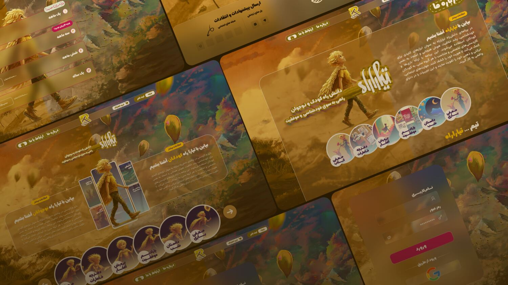
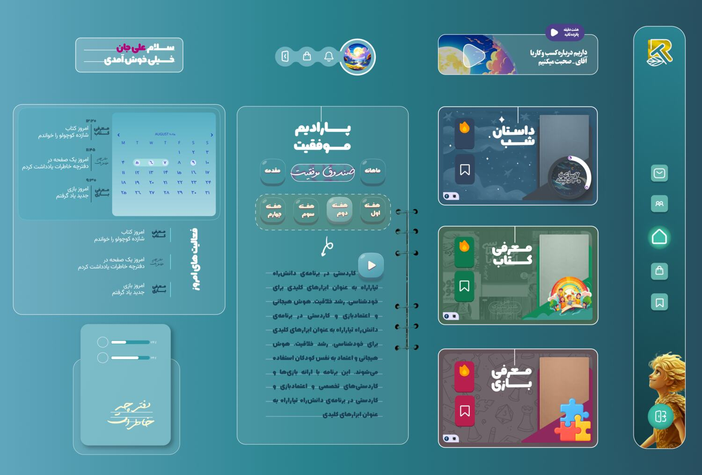
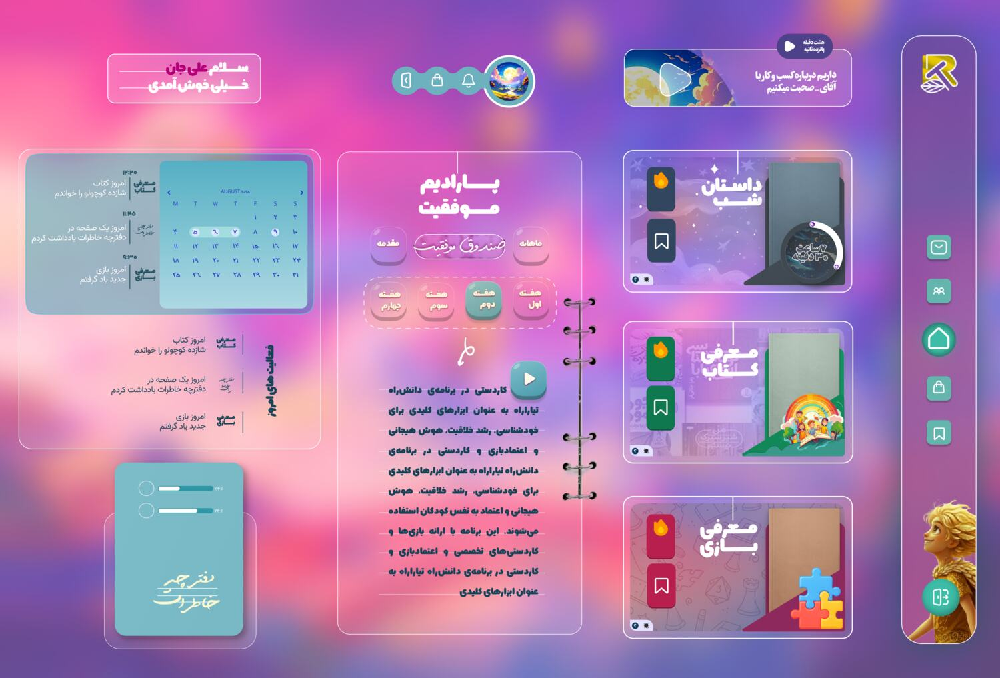
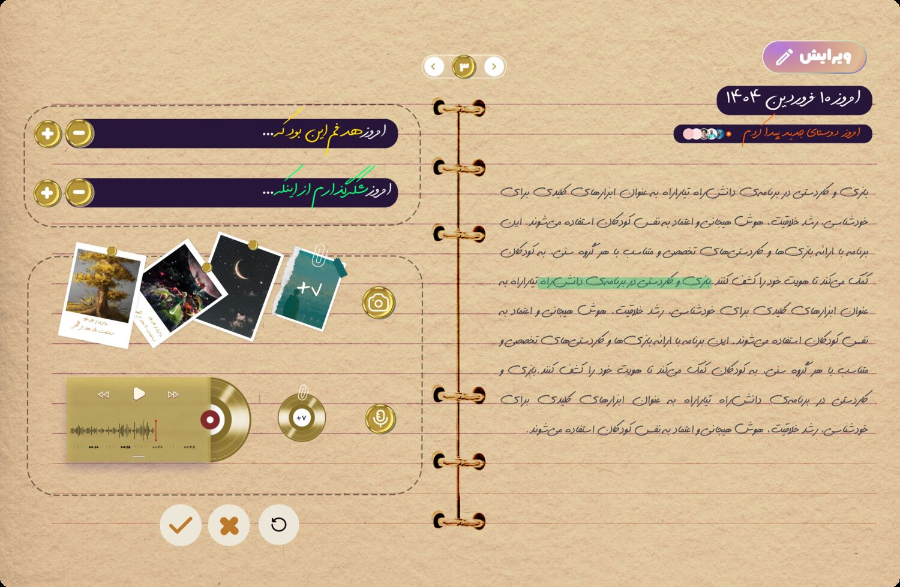
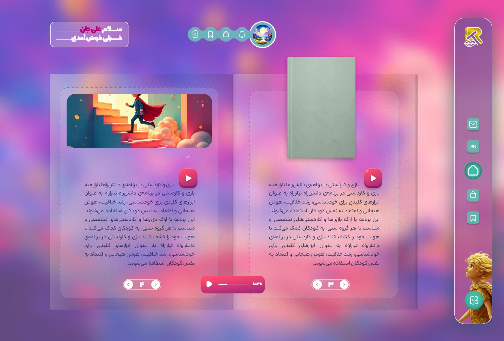
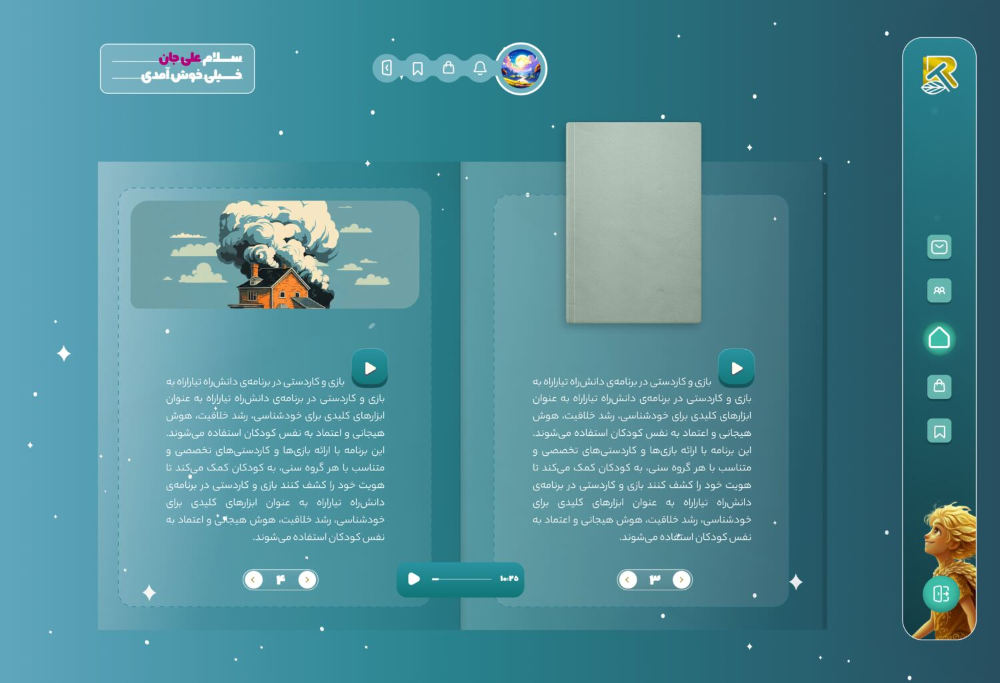
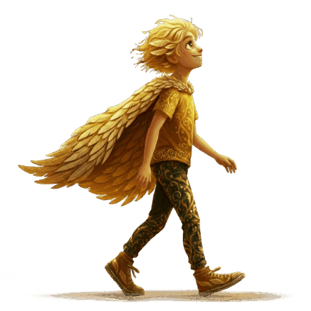
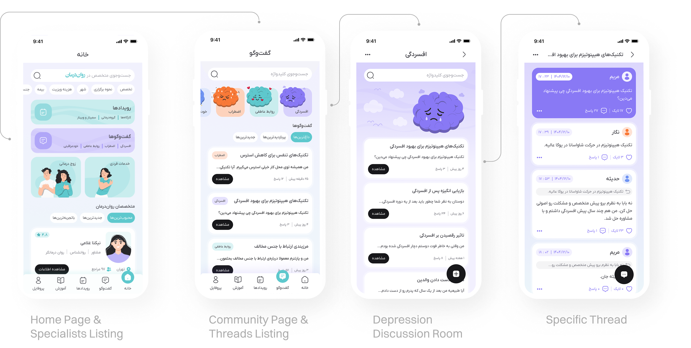
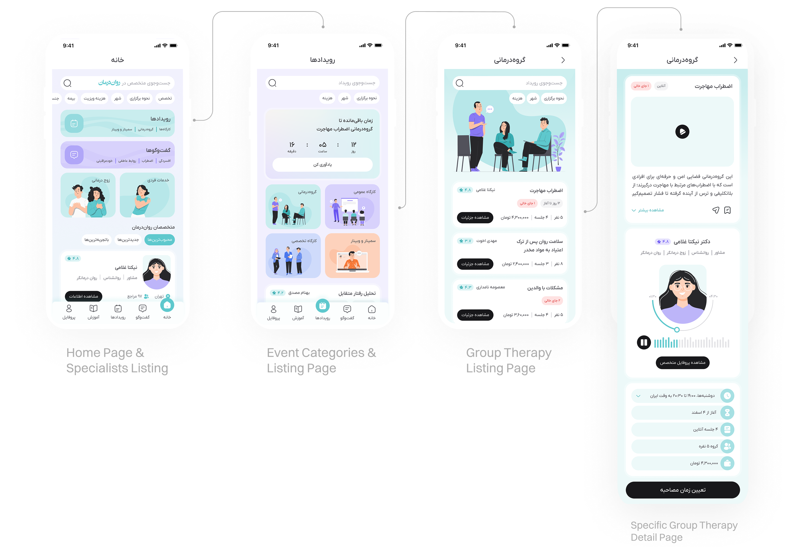

Hossein Emami
Connect user needs and business goals to design decisions that deliver real value.
Open to full-time, freelance, and remote.
I'm a product designer with a background in computer software engineering. I work across the whole process — research and synthesis through to validated, shipped decisions — and make sure they hold up rather than just get assumed.
I've worked across EdTech and mental-health products, comfortable owning the full design process from discovery and strategy through to shipped product, and working closely with engineers, PMs, and founders to keep decisions solid in production.
I'm available for full-time and freelance work, and open to fully remote roles.
More About MeWorked across the strategy and design of group-based mental health experiences within a real-world therapy platform. A collaborative project moving from research and discovery through ideation, design execution, and validation — shaping two group-based concepts, Events and Community, validated through usability testing.
View Case StudySole designer on an early-stage children's education platform (ages 3–16), owning the end-to-end design process from research to handoff. I consolidated low-impact pages into high-visibility surfaces and introduced habit-building patterns for recurring use. The product is preparing to launch.
View Case StudyFreelance
Sole designer for a music education and instrument-sales platform, owning the end-to-end design.
View LiveDelivered web and branding projects for small businesses, including landing page customization, interface improvements, and visual identity work (banners, logos, icons).
Earlier Experience
Worked closely with users and the technical team on a large-scale academic recruitment platform, developing a hands-on understanding of real user problems and system constraints. Deployed and configured Zabbix monitoring on Linux servers, setting up infrastructure tracking and alerting.
UX Research, User Interviews, Usability Testing, Statistical Analysis, Research Synthesis, Benchmarking, Product Strategy, Prioritization
Interaction Design, Information Architecture, User Flows, Wireframing, Prototyping, Visual / UI Design, Design Systems
Software-engineering foundation, Technical Feasibility, Developer Handoff, Basic Frontend Understanding
Figma, FigJam, Framer, Maze, SPSS, Adobe Suite, AI Prompting (LLMs)
Tiararah
Rebuilding a children's product around daily routines and recurring engagement.
Children's EdTech
Tiararah is an early-stage EdTech product designed for children, teenagers, and the families around them. The experience begins with a public website introducing the platform and the team, then moves into a personalized, subscription-based dashboard.
The dashboard brings the platform's core concepts together in one place: a recurring engagement program, nightly bedtime stories, monthly book and game picks, curated recreational experiences, and tools for personal reflection — with presentation adapted to each age group.
The product is pre-launch — selected parts of the work are shown here in limited form. Additional workflows, system architecture, and internal explorations are not publicly included.
Owned the product's design end to end — strategy, information architecture, interaction design, UI, and prototyping — as the startup's sole designer, working across web and mobile in close collaboration with the founder and the engineering team.
When I joined, a complete design for the product already existed — but the team no longer felt aligned with its direction and didn't want to build on it.
My mandate became defining a clearer foundation for the experience — from structure and interaction patterns to the overall visual direction — and bringing the team along with every decision, moving fast within the ambiguity of an early-stage product.
Features planned as standalone pages risked being visited once and forgotten. Gratitude and goal-setting became part of the journal; the recurring engagement program was surfaced directly on the dashboard, its audio sessions one tap away.
Consolidated standalone pages into the dashboard & journal.
Lightweight patterns reinforce continuity — daily streaks, reminders, and calendar-based daily tasks. Bedtime stories unlock in a fixed evening window, so a live countdown on the story card turns the constraint into nightly rhythm.
Introduced streaks, reminders, daily tasks & the story countdown.
The journal was designed as a low-friction space for capturing thoughts and moments across formats — text, voice, and imagery — personal and expressive rather than a productivity feature.
Designed the journal around expression, not tasks.
Serving ages 3–16 takes more than responsive layouts. Two complete visual themes run across web and mobile — one calmer and more atmospheric, the other brighter and more playful — without fragmenting the system.
Designed & systematized both themes end to end.
The public entry to the platform — setting tone and character before sign-up.

The calmer, more atmospheric direction. Ongoing activities, stories, and monthly picks live together on one surface.

The brighter, more playful direction of the same system.

Daily reflection in text, voice, and imagery — adapting to different ages and communication styles.

The monthly book, read inside the platform.

Available in a fixed evening window — counted down on the dashboard as part of the nightly rhythm.

The screens above are a selected view. Across web and mobile, the full product also included the landing page, log-in and sign-up, subscription plans, the dashboard, book and game introductions, night stories, the journal, profile, and a support / ticketing flow — along with notifications and in-app pop-ups such as the success box and goal-setting prompts.
The platform is preparing to launch, so outcome metrics aren't available yet. What the redesign delivered:
- A direction the whole team stands behind — full stakeholder alignment on the new design, in contrast to the version it replaced.
- Core content restructured into daily surfaces, built to be encountered rather than searched for.
- A brand character woven through the screens, adopted into the live product.

Ravan-Darman
Designing group-based mental health experiences — Events and Community — within a real-world therapy platform.
Mental Health Platform
This project explored opportunities to expand Ravan-Darman's service ecosystem beyond one-to-one therapy sessions. Working across research, strategy, UX, and UI design, the goal was to evaluate, design, and validate group-based experiences that could create value for users, specialists, and the business.
Read the complete case study write-up.
Worked across research, synthesis, ideation, UX, UI, prototyping, and validation, with primary ownership of statistical analysis, insight synthesis, and usability testing.
Combining qualitative and quantitative research methods to uncover user needs, validate assumptions, and identify opportunities for product improvement.
Tools: User Interviews, Insight Generation, Thematic Analysis, Statistical Analysis
Transforming research insights into product opportunities, prioritizing ideas, and defining strategic features with the highest user and business value.
Tools: User Flow, Opportunity Mapping, Feature Strategy, Idea Prioritization
Converting validated concepts into structured experiences through wireframing, prototyping, and interface design.
Tools: UI Design, Design System, Wireframing, Prototyping
Evaluating design effectiveness through usability testing and validating key product decisions using real user feedback.
Tools: Iteration, Task-Based Testing, Usability Testing, Maze Testing
Stakeholder interviews revealed an opportunity to expand the platform beyond individual therapy sessions. The challenge was to understand how group-based services could create business value, improve retention, and fit naturally within the existing product ecosystem.
"Group-based services are already a valuable part of mental health care. The challenge is understanding how they fit into our product ecosystem."— Ravan-Darman Stakeholder
To build a reliable understanding of user needs, we combined qualitative interviews with quantitative survey analysis. Through thematic analysis and statistical validation, we identified recurring behavioral patterns, key pain points, and unmet expectations. These insights formed the basis for our strategic decisions and feature prioritization.
Key InsightsUsers prefer learning through visual and auditory content over reading long texts.
Most popular formats: Podcast (52.8%) and Video (30.3%).
Restructuring the blog's Information Architecture (IA) to a media-centric approach and strategically utilizing short audio and video formats.
Users with the highest platform engagement — who are the primary customers — suffer the most from technical challenges and financial processes.
High correlation between user engagement and payment challenges. Satisfaction drop has a systemic root, independent of demographics.
Completely redesigning and simplifying the payment flows and providing alternative financial solutions to facilitate the payment process.
Clients face ambiguity when selecting a therapist and lack sufficient trust in the platform's information, relying heavily on external recommendations.
Selection source for 73.9% of users: ‘Friends’ recommendations.’ High level of ambiguity in understanding therapists’ specialties (38.6%) and resumes (30.7%).
Simplifying profile copywriting, highlighting key decision-making factors, and designing a verified review system to build trust.
Research revealed that uncertainty around privacy and how group services work mattered more than lower costs.
67.8% lack any conception of the session process. Direct correlation between fear for privacy and unfamiliarity with session structure.
Changing the copywriting tone to safer terms, clarifying the session process before registration, and visually emphasizing confidentiality guarantees.
"I want to know who is leading the session, what to expect, and whether it feels relevant to my needs before I join a group."— Saara
Research findings were translated into actionable opportunities through a structured ideation process. By evaluating ideas based on user value, business impact, and implementation effort, we prioritized solutions that addressed both user needs and stakeholder goals. This process ultimately led to the development of two core concepts: Events and Community.
Research findings showed that users often lacked enough information and confidence before participating in group-based services. A dedicated Events experience organizes workshops, therapy groups, and educational sessions in one place — letting users explore activities, pre-register for an initial assessment, and access facilitator introductions and supporting media.
Help users discover and confidently join group-based services.
Research findings highlighted the need for ongoing engagement beyond individual therapy sessions. A structured community space organizes discussions around mental-health topics, letting users participate in conversations and engage with others in a moderated environment.
Increase engagement and long-term retention.
Following the model influenced by the new features, we restructured the platform's information architecture — isolating Events from individual-session booking so the new features complemented rather than competed with the platform's core offering.

After defining the product direction, concepts were translated into tangible experiences through sketches, wireframes, interaction design, and high-fidelity interfaces. The focus was on creating a clear, accessible, and cohesive experience while maintaining consistency across the platform. Interactive prototypes were then developed to evaluate usability before validation.
UI DesignOur visual strategy focused on creating a calm, clear, and accessible experience for users. A UI Style Guide was developed alongside screen explorations to ensure consistency across the platform. We utilized a soft, pastel-based color palette to reinforce a sense of safety and approachability, while typography was selected for high legibility and reduced cognitive load in a sensitive context.


Click through the final product — explore the actual Event and Community flows.
Beside categorizing events, we included search filters such as city and price for users to find what they're looking for faster.
We used distinct color-coding across event types and community topics, helping users quickly recognize and navigate different categories as they browse.
To assess the effectiveness of the proposed solutions, we conducted scenario-based usability testing using interactive prototypes. The results provided valuable insights into navigation, task completion, and overall user understanding. Findings indicated that the new features aligned with user expectations and effectively supported the intended experience.
Participants completed the booking flow with minimal navigational issues. Many recorded interactions reflected engagement with supporting content — such as the specialist introduction and session details — rather than friction in the booking process.
Participants completed the task quickly and consistently. While some reached the target through alternative navigation paths, these variations did not appear to create noticeable friction — the community hierarchy and labeling were clear enough to locate discussions and interact efficiently.
User interviews, thematic analysis, and statistical validation revealed patterns that were not immediately visible — transforming raw observations into actionable insights that informed every major product decision.
From ideation to usability testing, each stage was grounded in research and user feedback. Validating concepts before implementation increased confidence in the final solution and reduced the risk of designing on assumptions alone.
Research, ideation & strategy, information architecture, UI design, and validation.
Hossein Emami
I'm a product designer with a background in computer software engineering. I work across the whole design process — from research and synthesis through to validated, shipped decisions.
My engineering background gives me a systematic read on product systems and technical constraints. I'm strongest where behavioral analysis meets product direction — connecting user needs and business goals to decisions that hold up in production.
Recently I've worked across EdTech and mental-health products. I'm open to new product design roles — working with local teams and open to remote.
- Product Design Bootcamp — Rahnema College · 2026 — 80h in-person classes + 180h of study and project work.
- B.Sc. Computer Software Engineering — Behbahan Khatam Alanbia University of Technology · 2017 – 2023.